What the Department does
On paper: fisheries, marine environments, aquatic biosecurity, and licensing. In practice: whatever ends up on a Deputy Secretary’s desk that mentions water.
The Department administers the Fisheries and Aquatic Resources Act, the Freshwater Licensing Framework, and a growing portfolio of marine biosecurity obligations that used to belong to three different agencies. It runs inspection programmes, marine research, contractor coordination, and national marine operations. It also holds a small number of mysterious files that only Fish will speak to.
Its real work happens at the seams: inspection days, contractor onboarding, research trips, incident coordination for marine biosecurity events, and a quiet stream of licensing appeals that are usually resolved before anyone reaches Estimates.
Zoo HQ · National Zoo and Aquarium, Canberra
Main operations floor beside the Aquarium. Fish wall directly behind the network team. Indoor coffee by the clownfish. Best coffee is outside, near the kangaroos.

images/prompts.txt.Zoo HQ · Operations Floor beside the Aquarium
The Department’s operations floor sits directly against the Aquarium wall, which means the SOC has an entire glowing reef behind it. Coffee comes from two places: indoors, beside the clownfish exhibit for the daily grind, and outdoors, near the kangaroos for anything that resembles a decision. Season-ending architecture reviews always happen at the outdoor bench, and the path there is not, technically, entirely clear of what everyone politely refers to as landmines.
Fourteen metres of aquarium, one very calm audience
A single continuous acrylic panel roughly fourteen metres long by three high. Home to a small reef community, two contentedly bored clownfish (Powell and Nixon), a wrasse the size of a shoebox (Barry the Second), a large angelfish who only faces the SOC monitors during incidents, and a moray eel who only appears when Dr Finch does.
Maintained by Wendy, who arrives Tuesdays and Fridays before the Zoo opens and leaves before anyone can talk to her. The Aquarium team consider the Department’s desks to be part of the exhibit and have quietly added a small plaque nobody has approved.
Meeting rooms are all named for fish. Everyone has an opinion about which one has the good HDMI cable. The Arowana Boardroom is where Dr Finch signs things.
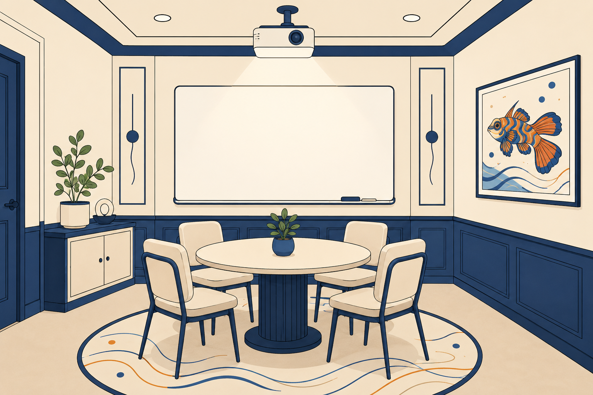
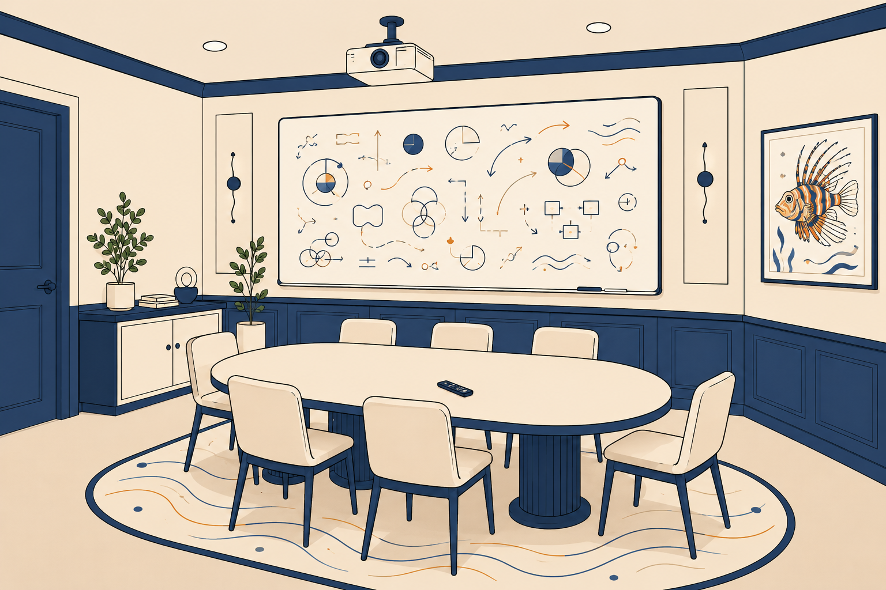
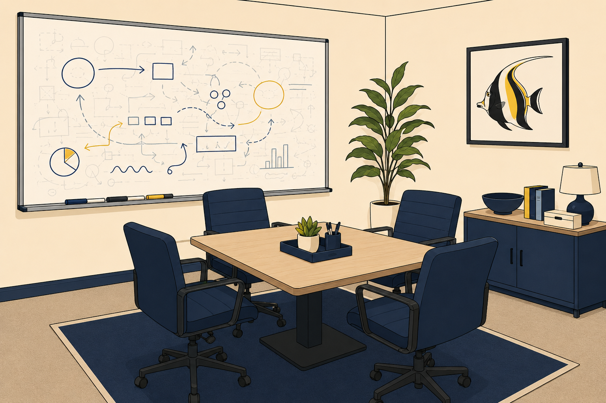
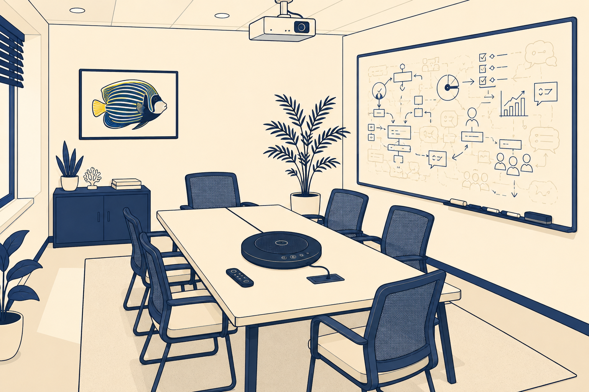
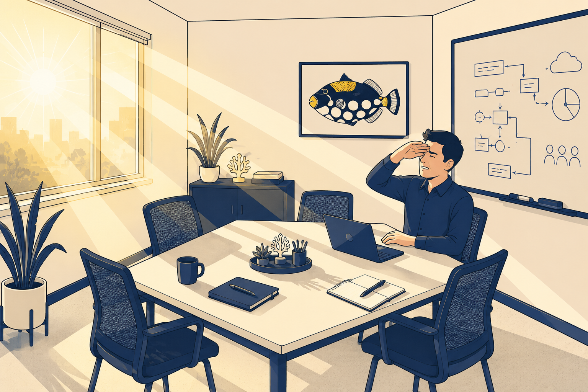
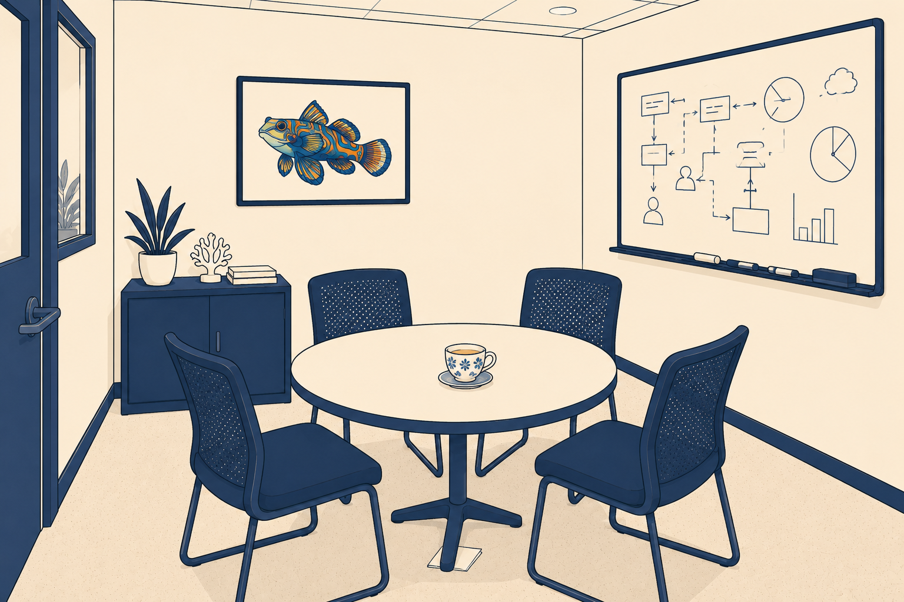
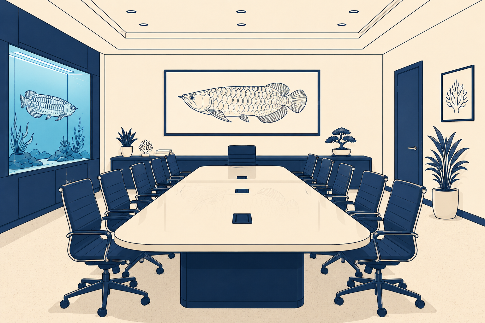
- ~120 staff at project start; grows to several hundred by the end of Season 6
- Resilient connectivity to both Tuggers and Gunners
- The path from the ops floor to the outdoor coffee bench passes the kangaroo enclosure — landmine advisory in effect
- Season-ending architecture reviews are held outdoors, weather and marsupials permitting
- Aquarium staff have been asked not to feed the fish during change windows
Tuggers — Tuggeranong
Primary data centre and initial primary SD-WAN hub. Behind a car park, behind a service station. Runs everything.
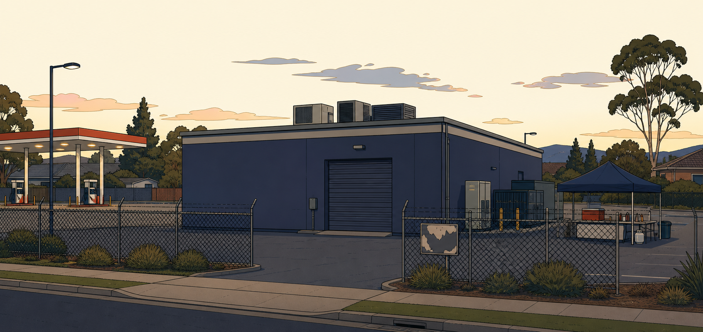
images/prompts.txt.Tuggers · DC1
A concrete rectangle on a Tuggeranong industrial estate. Runs the FortiGate HA cluster, FortiManager, FortiAnalyzer, the FortiSASE tenant’s on-ramp, and the two initial WAN circuits. Coffee arrives from Zoo HQ in an insulated flask, driven down by whichever engineer has drawn the short straw.
- FortiGate HA cluster (active–passive at start; matures across the seasons)
- FortiManager and FortiAnalyzer
- Initial primary SD-WAN hub; retains the role after dual-hub conversion in Season 4
- Two WAN circuits at start; a third arrives with the field-site programme
- The photocopier in the small break room has been jammed since 2023
Gunners — Gungahlin
Secondary data centre and future secondary SD-WAN hub. Above a physiotherapist. Diverse fibre back to Tuggers.

images/prompts.txt.Gunners · DC2
A co-location suite on the top floor of a mixed-use building. Below it: a physiotherapy clinic, a bulk-billing GP, and a bakery that half the Department visits on the way home. Runs a matching FortiGate HA pair, replication for Fisheries systems, and a small FortiAnalyzer collector.
- Second FortiGate HA cluster and matching FortiAnalyzer collector
- Fibre path to Tuggers; a diverse metro path arrives in Season 2
- Becomes the secondary SD-WAN hub in Season 4 (EP-31)
- Card access is temperamental if you are holding a coffee
- Power feed shares a substation with a nearby nightclub; discovered accidentally in Season 5
Outdoor coffee, near the kangaroos
Every season-ending architecture review happens here. Every season-ending architecture review has been briefly delayed by wildlife at least once.
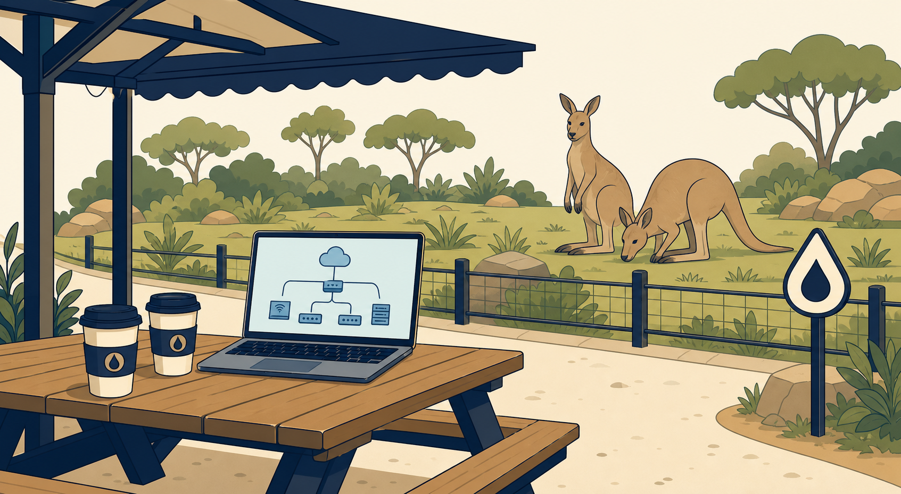
images/prompts.txt.The Kangaroo Path · Landmine Advisory in Effect
A short path leads out of Zoo HQ, past the primate house, past the reptile centre, and past a low-fence kangaroo enclosure. On the other side is a picnic bench with an awning, an outdoor coffee cart run by Del from 07:00, and the best takeaway espresso for two suburbs. What’s underfoot on the path is what everyone politely calls landmines. Del sells laminated route maps for a dollar.
Season-ending architecture reviews are held here. Señor Gonzalez always arrives with either a burrito, a mandarin, or a Corona with a lemon twist; he pretends this is coincidence. Dr Finch has been observed taking a full lap of the enclosure before signing anything.
- Del’s cart: espresso, macchiato, flat white, cold brew, no substitutions after 10am
- Wednesdays only: pastries baked earlier that morning at the bakery under Gunners
- Landmine advisory sign refreshed weekly by Kev
- Do not sit on the far bench during the school-holiday keeper talks
The starting topology
Zoo HQ, Tuggers, Gunners. A FortiSASE tenant, a small FortiClient pilot, one thin-edge site, and a basic SPA pilot.
At project start, the network is small, functional, and not yet standardised for national scale. Zoo HQ (~120 staff) has resilient connectivity to both data centres. Tuggers holds the primary FortiGate HA cluster, FortiManager, FortiAnalyzer, and the FortiSASE tenant’s on-ramp. Gunners mirrors it on a smaller scale. There is a small FortiClient agent-based SIA pilot, one agentless contractor use case, one thin-edge field site, and a basic SPA pilot published through a FortiGate access proxy. SD-WAN is deployed as a basic underlay + overlay.
Nothing is broken. Nothing is properly built either. Samwise’s job across six seasons is to turn a network that works into a FortiSASE architecture that scales, integrates cleanly, and can be reasoned about at any hour.
Growth by season
Six stages. Nothing is added silently; every change is recorded in the Architecture Decision Register (a Word document Mel refuses to abandon).
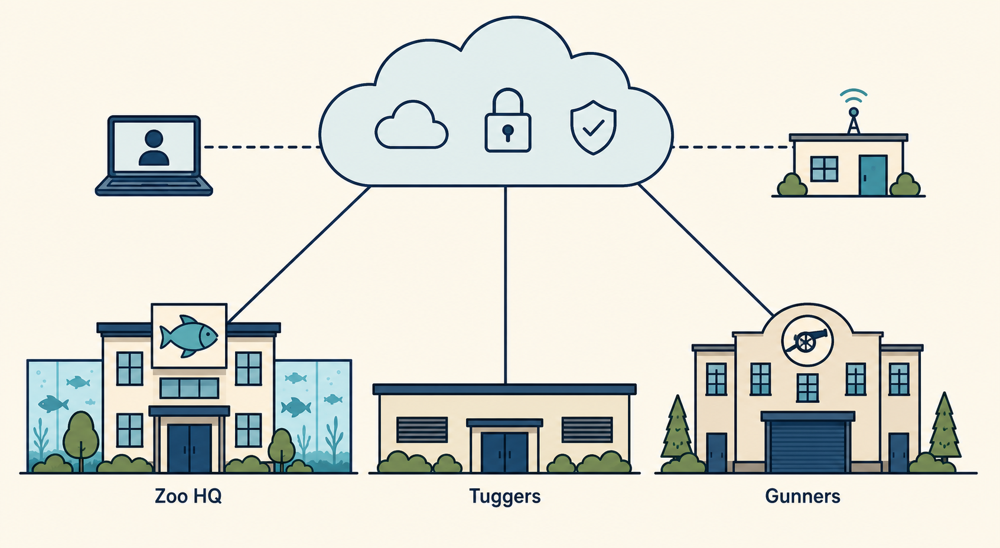
The Department’s SASE model becomes real. SIA runs for a FortiClient pilot; one thin-edge field site is onboarded; a basic SPA is published. The three access modes (SIA / SPA / SSA) become explicit.
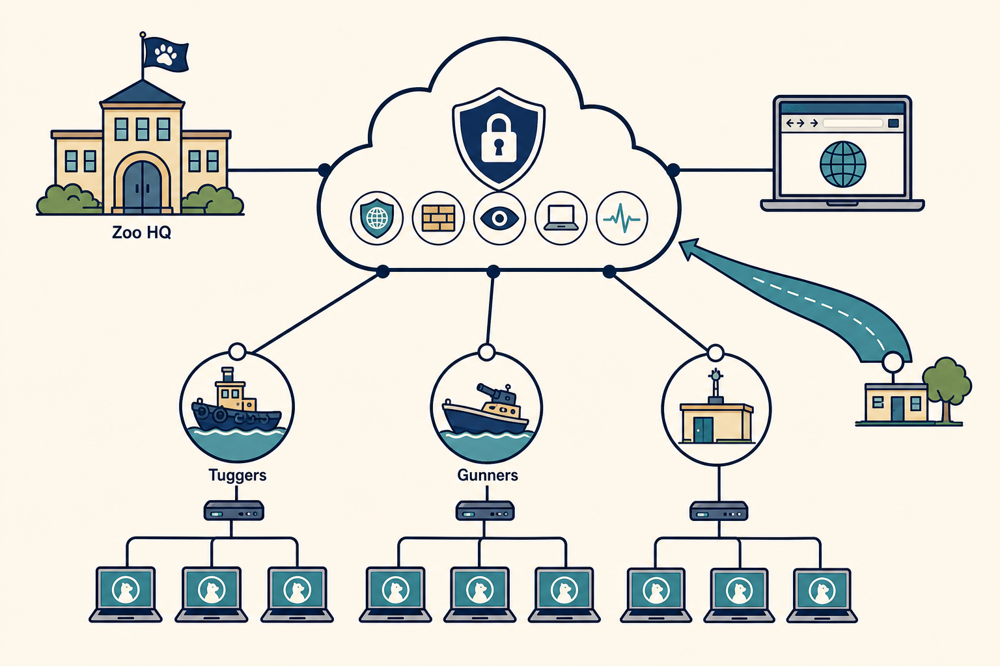
SIA reaches agent, agentless, edge devices, and branch on-ramp scale. SWG, FWaaS, RBI, SSA, and DEM enter the estate as first-class citizens.
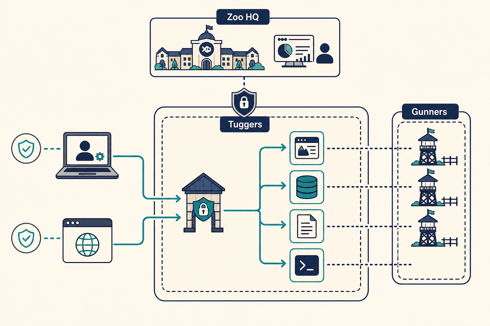
Legacy VPN is retired. Private apps are published explicitly through the FortiGate ZTNA access proxy. Posture becomes a real gate; on-net/off-net behaviour is designed rather than accidental.
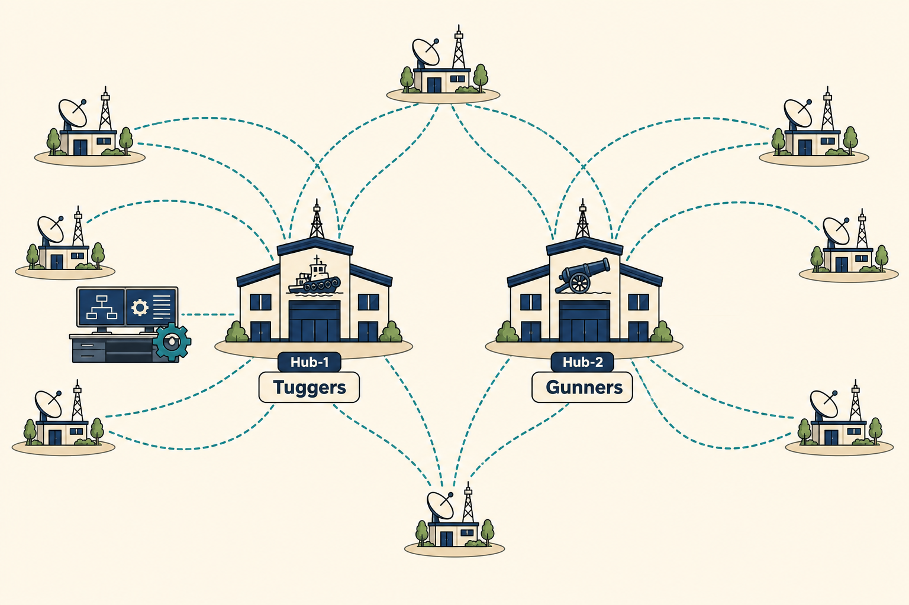
Tuggers stays primary; Gunners is promoted to secondary SD-WAN hub. ZTP, blueprints, and orchestration mature. Field sites onboard without a human on the ground.
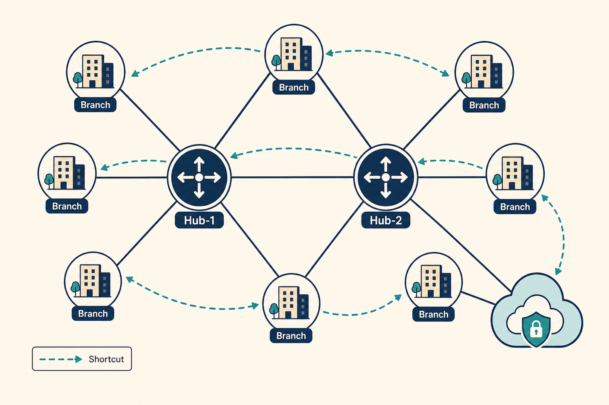
BGP per overlay, loopback peering, and self-healing routes stabilise the estate. ADVPN cuts spoke-to-spoke hairpins. FortiSASE plugs in as a spoke so remote users share the same private-access design.
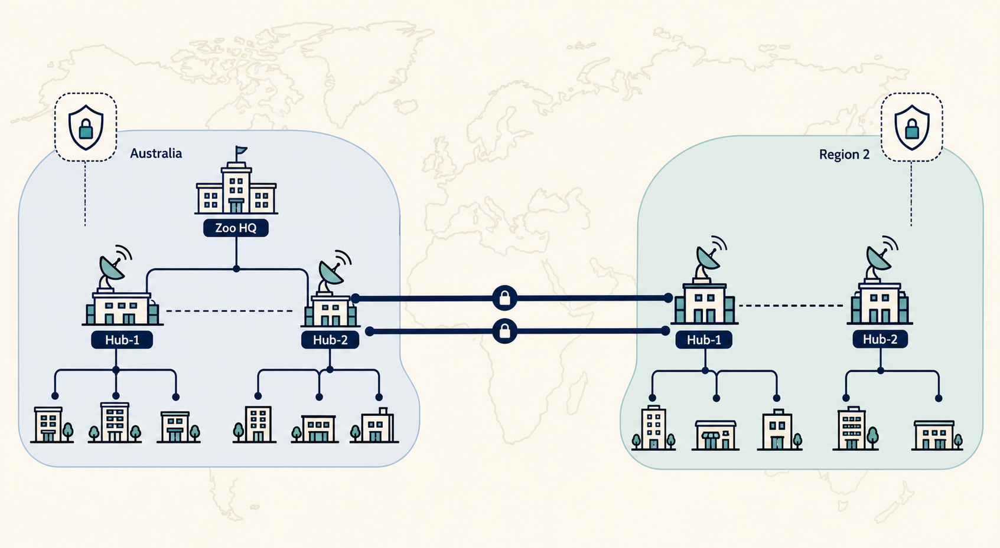
The Department opens its first international region. VRF-aware overlays and regional routing let SIA, SPA, and SD-WAN respect data residency. Samwise closes with the Secure Waters Incident and presents the finished architecture in the Arowana Boardroom.
How the story uses the world
The story doesn’t just decorate the technical content — it generates it.
Every episode begins inside the Department: a researcher who can’t reach a private app, a licensing officer who says the internet is “slow,” a contractor who can’t install anything, a field site that’s only reachable during business hours. The problem creates the technology, not the other way around.
Nothing is added to the topology silently. When a new site, platform, access method, user type, or route appears, it is recorded in agency.txt and cross-referenced in the Architecture Decision Register. This is Mel’s doing, and Mel does not compromise on this. Ever.